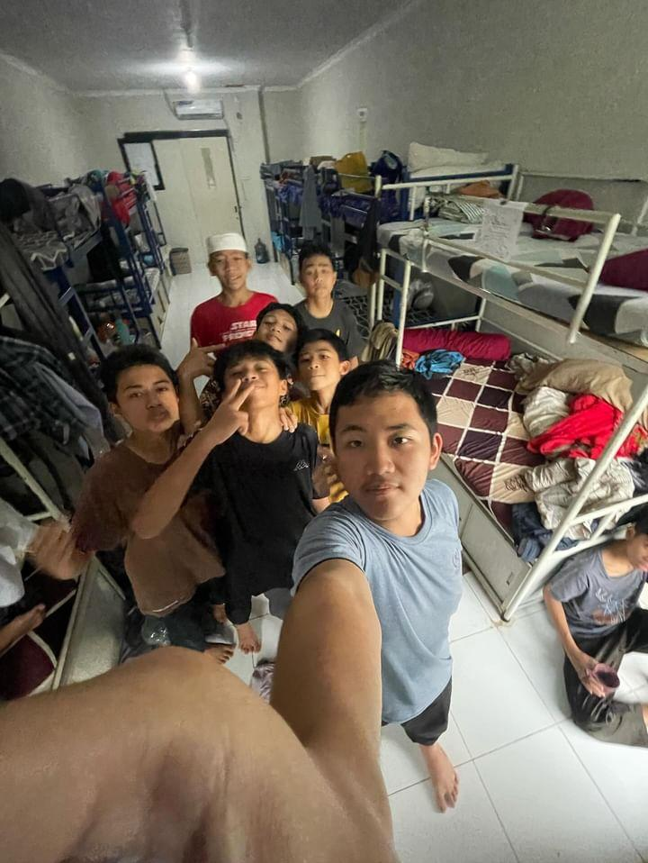

Kamar Nafi'
Al - Madany

Kamar Nafi' Al Madany adalah salah satu kamar di PTP IT Abu Dzar, dengan musyrif Ustadz Farhan.
Kamar Nafi' AL Madany adalah kamar paling bersih di pondok abu dzar ini, kalo masuk kamar ini Fix Betah Cuy.
Orang orang di kamar nafi' orangnya seru seru cuy, ada:
- Bintang Maulana Lazuardy, dipanggil Bintang
- Muhammad Rifky Himawan Widitama, dipanggil Rifky
- Muhammad Azzam Al Ghozy, dipanggil Azzam/Ghozy
- Rafif Ardinata, dipanggil Rafif
- Muhammad Garuda Pratama, dipanggil Garuda/Yazid
- Baraka Ramadhan, dipanggil Baraka/Badhon
- Hirozhi Afrianta Hasan Meazza, dipanggil Hirozhi/Ozhi
- Raffa Hitipeuw, dipanggil Raffa/Aqos
- Avrijal, dipanggil Ijal
- Raffi Dzakwan Cahyadi, dipanggil Raffi
- Muhammad Mustafid Ilmi, dipanggil Mustafid/Afid
- Arsyad Faqih Alhisyami, dipanggil Faqih
- Zaki Abizar Syarif, dipanggil Zaki
- Luthfi Novriansyah, dipanggil Luthfi/Novri/Ame
- Salafy Abdullah Yusuf, dipanggil Salafy
Nama Nama Kamar yang ada di PTP IT Abu Dzar:
- Kholaf Al-Asyir
- Ibnu Katsir
- Asy-Syathibi
- Ibnu Amir
- Nafi' Al Madany
- Abu Ja'far
- Abu Amr
- Al-Kisa'i
- Hamzah
- Qolun